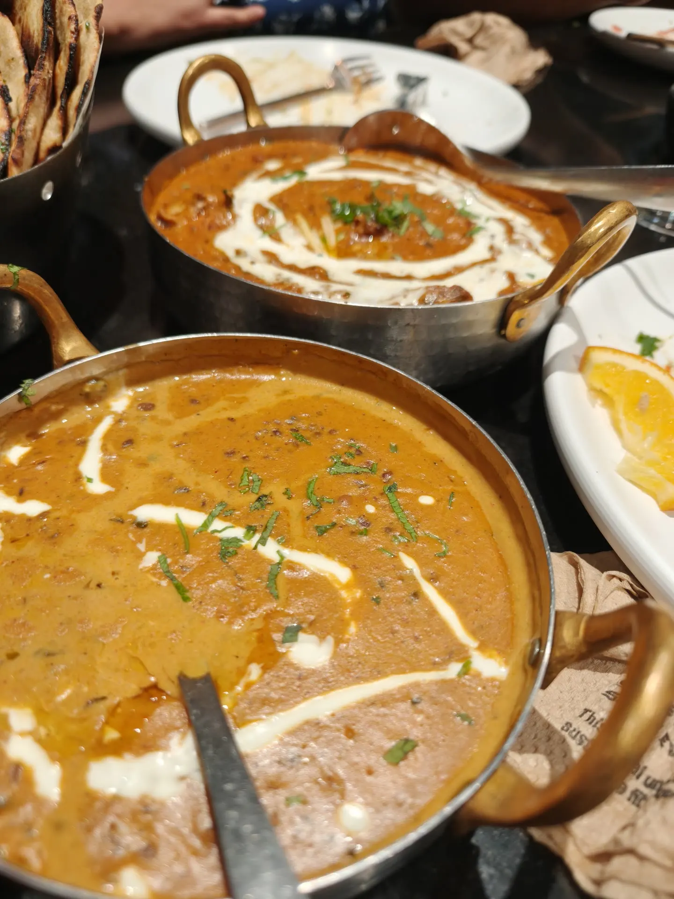
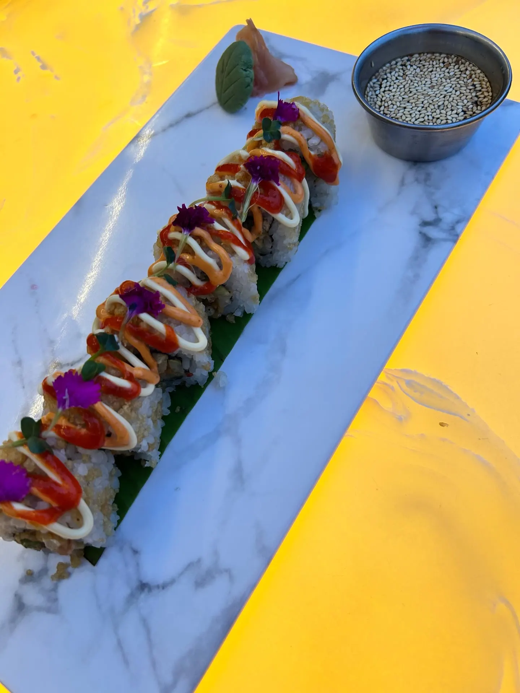
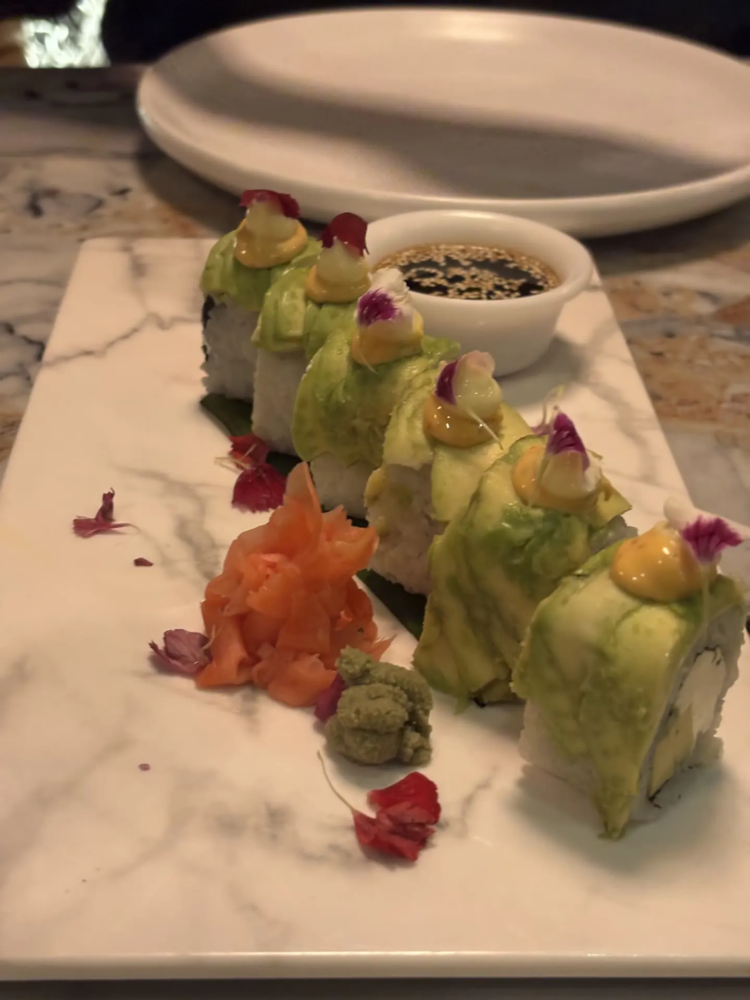
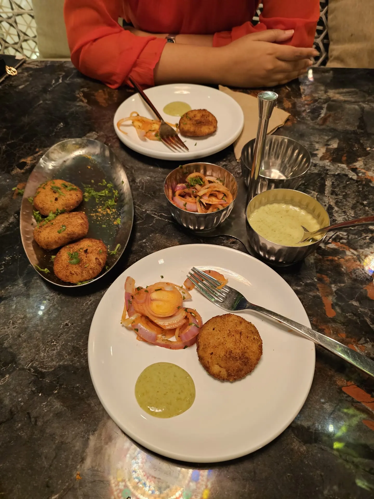
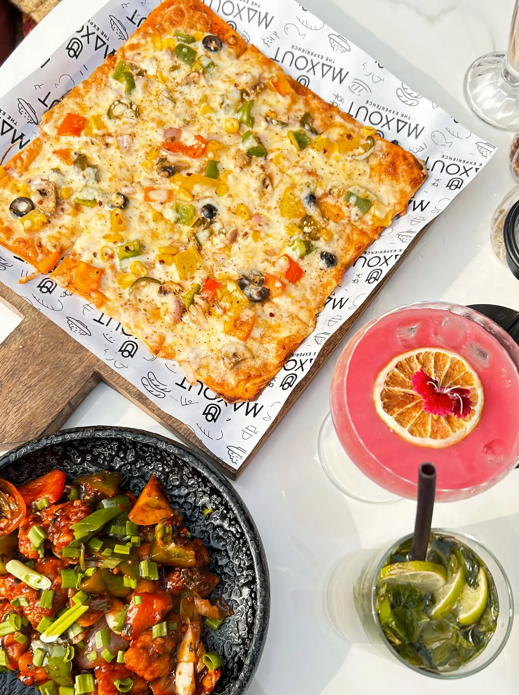

On the menu
Everything, cooked properly.
Tandoor and curries sit next to sushi, pasta and wood-fired pizza. One kitchen, no shortcuts. Ask your server for prices, or see the full priced menu on Zomato.
Classic Paneer Tikka Veg
Paneer cubes marinated and grilled.
Achari Paneer Tikka Veg
Paneer tikka with a tangy, pickle-based marinade.
Malai Paneer Tikka Veg
Paneer marinated in a creamy yogurt sauce, grilled.
Stuffed Mushroom Tikka Veg
Mushrooms marinated with spices and grilled.
Dahi Kebab Veg
Crispy kebabs made with hung curd and spices.
Malai Chaap Tikka Veg
Chaap pieces marinated in cream and spices, grilled.
Chef's Special Crispy Fried Chaap Veg
Our own chaap recipe, crispy fried.
Tandoori Stuffed Aloo Veg
Aloo stuffed with spices, grilled in the tandoor.
Afghani Chicken Non-Veg
A tender chicken appetizer marinated with spices, grilled to perfection.
Tandoori Chicken Non-Veg
Chicken marinated in yogurt and spices, cooked in the tandoor.
Malai Chicken Tikka Non-Veg
Creamy, tender chicken tikka with mild spices.
Kali Mirch Chicken Tikka Non-Veg
Spicy and peppery chicken tikka with a bold flavor.
Seekh Kebabs Non-Veg
Minced meat kebabs flavored with spices and grilled.
Spiced Tangri Kebabs Non-Veg
Marinated chicken drumsticks cooked to perfection.
Mutton Seekh Kebab Non-Veg
Minced mutton skewers cooked in the tandoor.
Fish Tikka Non-Veg
Fish marinated in spices and grilled in the tandoor.
Gourmet Rolls Veg & Non-Veg
Chicken tikka, malai tikka, seekh kebab, mutton seekh, paneer tikka, mushroom or chaap tikka, wrapped in a soft roll.
Dal Makhni Veg
Rich, creamy black lentils slow-cooked with spices.
Dal Tadka Veg
A spicy, lentil-based curry tempered with ghee and spices.
Shahi Paneer Veg
Rich, royal paneer curry in a creamy, aromatic sauce.
Butter Paneer Masala Veg
Soft paneer cooked in a buttery, tomato-based gravy.
Kadhai Paneer Veg
A spicy and tangy paneer curry with bell peppers.
Malai Kofta Veg
Soft paneer balls in a rich, creamy tomato-based gravy.
Palak Paneer Classic Veg
A creamy spinach curry with paneer cubes.
Kashmiri Dum Aloo Veg
Kashmiri-style stuffed potatoes in a fragrant cashew gravy.
Rajma Masala Veg
Kidney beans cooked in a flavorful spiced gravy.
Chana Masala Veg
Chickpeas cooked in a spicy, tangy gravy.
Butter Chicken Royale Non-Veg
A luxurious version of the classic butter chicken.
Signature Chicken Curry Non-Veg
A rich and flavorful chicken curry with aromatic spices.
Kadhai Chicken Non-Veg
A spicy chicken curry cooked wok-style with bell peppers.
Chicken Tikka Masala Non-Veg
Tandoori chicken tikka finished in a rich, thick curry.
Oberoi's Special Chicken Non-Veg
Our chef's special, an aromatic mix of spices.
Mutton Curry, Desi Ghee Infused Non-Veg
Mutton cooked in traditional desi ghee for deep flavor.
Saag Mutton Non-Veg
Mutton cooked with mustard greens in a rich gravy.
Fish Curry Non-Veg
Fish cooked in a spiced gravy.
Chicken Biryani Non-Veg
Aromatic rice cooked with chicken, served with raita.
Mutton Biryani Non-Veg
Fragrant rice with tender mutton, served with raita.
Veg Biryani with Raita Veg
Fragrant rice with mixed vegetables, served with raita.
Egg Biryani with Raita Non-Veg
Basmati rice cooked with egg, served with raita.
Rajma, Chholey or Dal with Rice Veg
Your pick, served with steamed rice.
Schezwan Noodles or Fried Rice Veg
Cooked with a spicy Sichuan sauce.
Chilly Garlic Noodles or Fried Rice Veg
Stir-fried with garlic and chilli.
Chicken Hakka Noodles or Fried Rice Non-Veg
Stir-fried with marinated chicken.
Classic Chilly Chicken Gravy Non-Veg
Chicken in a spicy, tangy gravy.
Chicken in Red Thai Curry Non-Veg
Cooked in a traditional curry with galangal, lemongrass and chilli.
Chilly Fish Gravy Non-Veg
Fish fillets cooked in a spicy, tangy gravy.
Prawns Exotica Non-Veg
Your choice of hot garlic, black bean or Schezwan sauce.
Avocado & Cream Cheese Roll Veg
Fresh avocado and creamy cheese, rolled in sushi rice.
Spicy Kinoko Roll Veg
Spicy mushrooms and sushi rice, wrapped in seaweed.
Asparagus Tempura Roll Veg
Tempura-battered asparagus, served with dipping sauce.
Teriyaki Chicken Roll Non-Veg
Teriyaki-glazed chicken wrapped in sushi rice and nori.
Prawn Tempura Roll Non-Veg
Tempura prawns rolled in sushi rice and seaweed.
Wild Mushroom and Cheese Dim Sum Veg
Steamed dumplings filled with wild mushrooms and cream cheese.
Edamame and Truffle Dim Sum Veg
Truffle-infused dim sums with an edamame filling.
Crystal Veggies & Cottage Cheese Dim Sum Veg
Light crystal wrappers filled with vegetables and cottage cheese.
Garlic Chicken in Chilli Oil Dim Sum Non-Veg
Spicy garlic chicken wrapped in delicate dumplings.
Prawns Hargao Non-Veg
Steamed dim sums filled with delicate prawns.
Classic Margherita Veg
Fresh mozzarella, tomato sauce and basil.
Farmers' Fresh Veg
A medley of vegetables on a cheese pizza.
Mushroom & Smoked Cheese Veg
Topped with mushrooms and smoked cheese.
Tomatina Veg
Fresh tomatoes, mozzarella and a drizzle of pesto.
Chicken Pepperoni Non-Veg
Thin-crust pizza topped with chicken and pepperoni.
BBQ or Peri Peri Chicken Non-Veg
BBQ or peri peri flavored chicken on a pizza.
Creamy Pesto Pasta Veg
Basil pesto cream sauce, your choice of penne, fusilli or spaghetti.
Arrabbiata Pasta Veg
Spicy tomato-based sauce, your choice of pasta.
Alfredo Pasta Veg
Creamy Alfredo sauce, your choice of pasta.
Hot & Sour Soup Veg
A tangy, spicy soup with vegetables.
Smoked Mushroom Creamy Soup Veg
A rich, creamy soup with the delicate flavor of smoked mushrooms.
Prawn Soup Non-Veg
Rich, hearty prawn broth with herbs and spices.
Green Avocado Salad Veg
Fresh avocado with mixed greens, citrus dressing and roasted nuts.
Chef's Special Salad Veg
Lettuce, fruits and walnuts in a tangy in-house dressing.
Caesar Salad Veg
Romaine lettuce with creamy Caesar dressing, croutons and parmesan.
Truffle Mushroom Bao Veg
Soft bao buns filled with truffle-flavored mushrooms.
Barbeque Cottage Cheese Bao Veg
Bao filled with barbeque-style cottage cheese.
Overloaded Nachos Veg
Nachos piled high with cheese, jalapeños and salsa.
Peri Peri Fries Veg
Crispy fries tossed in spicy peri peri seasoning.
Herb Cheese Garlic Bread Veg
Garlic bread topped with melted cheddar cheese.
Chicken Lollipop Non-Veg
Marinated and grilled chicken lollipops.
Chef's Special Fried Chicken Non-Veg
Crispy fried chicken with a golden crust.
Amritsari Fish Fry Non-Veg
Fish marinated in a spiced batter and fried.
Exotic Fish N Chips Non-Veg
Fish served with crispy fries and tartar sauce.
Butter Garlic Prawns Non-Veg
Prawns cooked in a rich butter and garlic sauce.
Grilled Fish with Lemon Butter Sauce Non-Veg
Fish grilled to perfection with a lemon butter sauce.
Grilled Chicken with Mushroom Sauce Non-Veg
Grilled chicken served with a creamy mushroom or mustard sauce.
Garlic Naan Veg
Soft naan finished with garlic and butter.
Butter Naan Veg
Classic naan, brushed with butter.
Stuffed Naan Veg
Aloo, onion, mix or paneer.
Lachha Parantha Veg
Layered, flaky tandoor bread.
Stuffed Parantha Veg
Aloo, onion, mix or paneer.
Tandoori Roti Veg
Classic whole wheat bread from the tandoor.
Missi or Onion Roti Veg
Gram flour roti, plain or with onion.
Boondi Raita Veg
A refreshing yogurt-based side with crispy boondi.
Pineapple Raita Bliss Veg
Raita made with yogurt and fresh pineapple.
Gulab Jamun Veg
Traditional gulab jamun, filled with sweetness.
Kesar Kheer Veg
Saffron-flavored chilled dessert, creamy and fragrant.
Brownie Sundae Veg
Warm in-house brownie topped with ice cream and chocolate sauce.
Lotus Biscoff Cheesecake Veg
Creamy cheesecake with a Lotus Biscoff crust.
Full priced menu also on Zomato ↗






